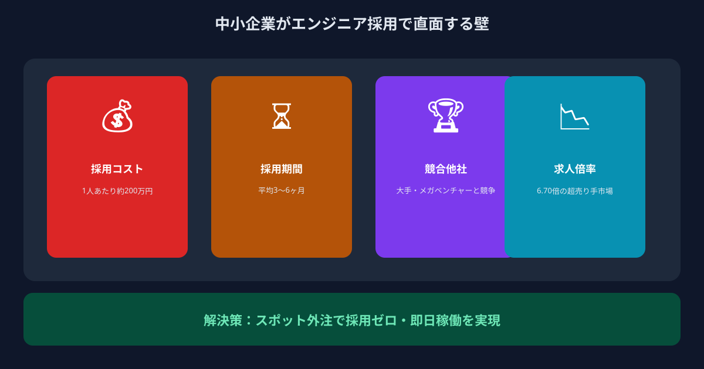
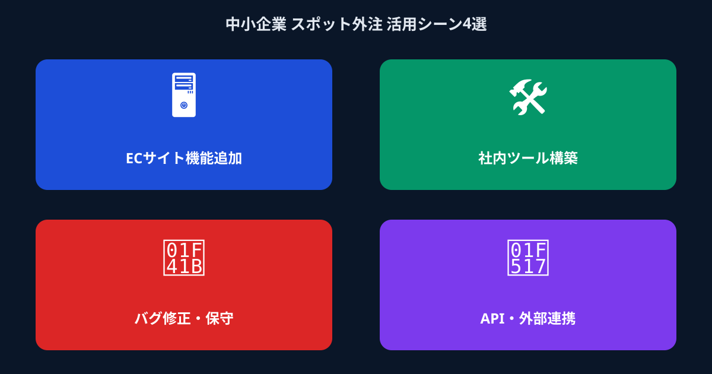

「採用したいのに採れない」——エンジニア不足が中小企業を直撃する現実
2026年、エンジニアを採用しようとしている企業の多くが、同じ壁にぶつかっています。「求人を出しても応募が来ない」「やっと来た候補者が大手に取られる」「内定を出したのに辞退された」——。こうした声は、もはや一部の企業の悩みではなく、中小企業やスタートアップが置かれた構造的な現実になっています。
転職サービスdodaの調査（2026年1月）によれば、IT・通信分野の転職求人倍率は6.70倍に達しています。これは、エンジニア1人に対して6〜7社の企業が採用を争っているということを意味します。採用競争に潤沢な予算を投じられる大企業と、限られたリソースで戦う中小企業との間には、埋めがたい差がある状況です。
一方、経済産業省の試算では2030年までに約59万人のIT人材が不足するとされており、この構造はしばらく続く見通しです。「採用さえすれば解決する」という前提そのものが、もう成り立たない時代に入っています。
- エンジニアを探しているが、求人を出しても応募が来ないか、来ても的外れな候補ばかりだ
- 採用できたとしても1人あたり数百万円のコストがかかると聞いて二の足を踏んでいる
- 開発したいものはあるのに、エンジニアがいないせいで半年以上止まっている
- 大手の開発会社に見積もりを出したら、想定の何倍もの金額が届いて諦めた
「エンジニアが採れない」という問題は、努力や工夫で乗り越えられる壁ではなくなりつつあります。では、開発を動かし続けるためにはどうすればよいのか。次のセクションで採用コストの実態を整理したうえで、本当の解決策を提示します。
なぜ中小企業はエンジニア採用競争で勝てないのか
エンジニアの採用が難しい理由は、意欲や予算の問題だけではありません。採用市場の構造そのものが、中小企業にとって不利にできているのです。
まず、コストの観点から見てみましょう。人材紹介会社を経由したエンジニア採用では、成功報酬として年収の30〜35%前後が相場とされており、年収600万円のエンジニアを1人採用するだけで、180万〜210万円の費用が発生します。加えて、採用活動にかける人事担当者の工数・面接コスト・オンボーディング期間中の生産性ロスを加算すると、1人あたりの実質的な採用コストは200万〜300万円に達するというデータもあります。
次に、スピードの問題があります。求人票の作成から応募者対応・面接・内定・入社まで、一般的に2〜3か月はかかります。しかし現実には、その間にも開発タスクは積み上がり、プロダクトの進捗は止まり、事業機会は失われていきます。スタートアップや成長期の企業にとって、「2か月後に人が来る」という前提で事業計画を立てること自体がリスクになります。
そして、競争の不均衡があります。大企業は充実したリモート環境・高い給与・ブランド力・福利厚生で優秀なエンジニアを引きつけます。この土俵で戦うことを強いられている中小企業の採用成功率は、大企業の約3分の1にとどまるという調査結果もあります。採用に多くのお金と時間をかけて、それでも「採れない」という状況は、中小企業にとって現実です。
ここで重要なのは、「採用して内製化する」か「大手に外注する」かという二択を捨てることです。その二択の間には、もっと現実的な第三の選択肢が存在します。
「採用か外注か」その二択を手放すと、開発は動き出す

ANKENが提供するのは「マイクロ・マッチング」——開発リソース不足を抱える企業と、スポットや副業で動けるハイスペックエンジニアを、タスク単位・短期という細かい粒度でつなぐ仕組みです。
登録しているのは、メガベンチャーや大手IT企業に本業を持ちながら、週末や平日夜の空き時間を使って副業案件をこなすフルスタックエンジニアたちです。彼らは採用市場には出てきません。転職を考えていないからです。しかし、スポットで手伝えるなら、という形であれば動いてくれます。ANKENはその接点を作ることで、中小企業が採用競争を経ずにハイスペックエンジニアと出会える場を提供しています。
メリット①｜採用コスト0円で即戦力エンジニアを確保できる
採用エージェントへの成功報酬も、転職媒体への掲載費用も、一切かかりません。ANKENは登録・相談が無料で、依頼単位での費用設計になっています。「1人採用するだけで200万円飛ぶ」という採用コストを支払わずに、同レベルあるいはそれ以上の開発力を持つエンジニアと仕事できる設計です。
採用コストをそのまま開発投資に回せるため、特に予算に制約のあるスタートアップや中小企業にとって、損益分岐点が大きく改善します。「採用できないから開発が止まっている」という状態を、コスト面から根本的に解消します。
メリット②｜採用期間ゼロ・最短翌日から稼働できる
採用活動では最低でも2〜3か月かかる「人が来るまで待つ時間」が、ANKENではありません。依頼内容をまとめてご相談いただければ、スキルと稼働スタイルがマッチするエンジニアを最短で提案します。契約もシンプルで、稼働開始までのリードタイムを極限まで短くする設計です。
「今週末にこれだけ進めてほしい」という緊急性の高い依頼にも対応できます。採用プロセスで生まれる「2か月のタイムロス」が消えるだけで、事業の意思決定スピードが根本から変わります。
メリット③｜固定費ゼロ・タスク単位の低リスク設計
正社員を採用すれば、仕事が少ない時期でも給与・社保・福利厚生のコストは発生し続けます。ANKENはタスク単位・スポット単位での依頼が基本なので、「必要な時に、必要な分だけ」依頼できます。固定費をゼロに保ったまま、繁忙期やプロジェクトの山場だけ開発力を上げる、というコントロールが可能です。
まず1つのタスクだけ依頼して相性を確認し、良ければ継続して依頼する、という進め方もできます。「いきなり大きなコストをかけるリスクを取れない」という企業にとって、スポット単位で試せるのは大きな安心材料です。
中小企業のスポット外注、リアルな活用シーン4選

「どんな仕事を依頼できるのか」をイメージしやすくするために、中小企業がANKENを通じてスポット外注を活用したシーンを4つご紹介します。いずれも採用では対応できない「小さいけれど確実に必要な開発」の例です。
デザイナーがLPのデザインカンプを作り上げたが、社内のエンジニアはプロダクト開発で手一杯で着手できない。ANKENでフロントエンドエンジニアに週末2日間のスポット依頼をしたところ、月曜朝には実装が完了。採用していたら入社まで2か月以上かかっていた案件が、週末2日で完結した。
新しく導入したCRMと既存の受発注システムの間でデータ連携バグが発生。ベンダーサポートでは解決まで1か月以上かかると言われた。ANKENで週1日稼働のエンジニアに依頼したところ、3日間で原因特定から修正・テストまで完了。コストも時間も大幅に節約できた。
従業員15人規模の会社で、Google スプレッドシートと手動メールで回していた受注管理フローが複雑化。簡単なWebアプリへの移行を検討していたが、「開発会社に頼むほどでもない」と後回しにしてきた。ANKENで週2日・3週間のスポット依頼で、社内専用の管理ツールが完成した。
新しいSaaSプロダクトのアイデアがあるが、社内に技術スタックの選定ができる人間がいない。本開発前のPoC（概念実証）と技術アーキテクチャの設計だけをスポット依頼したい。ANKENでメガベンチャー出身のフルスタックエンジニアに3日間依頼し、意思決定に必要な情報と最初のコードが揃った。
よくある質問
- Q. エンジニア採用コストはどのくらいかかりますか？
- A. 1人あたり200〜300万円程度かかるとされ、中小企業には大きな負担です。
- Q. 採用しない開発リソース確保の方法はありますか？
- A. あります。固定費ゼロのスポット外注で、必要なタイミングだけ即戦力エンジニアに依頼できます。
- Q. 実際にどんな活用シーンがありますか？
- A. 新機能開発、既存システムの保守、繁忙期のみの開発支援など4つのシーンで活用されています。
まとめ
「エンジニアが採用できない」という問題は、努力では解決しにくい構造的な課題です。求人倍率6.70倍の市場で採用競争に勝とうとすることより、採用競争自体に参加せずに即戦力エンジニアと仕事できる仕組みを使うほうが、中小企業にとってはるかに合理的な選択です。
ANKENのマイクロ・マッチングなら、採用コスト0円・採用期間0日で、メガベンチャー出身のフルスタックエンジニアにタスク単位から仕事を依頼できます。固定費もかからないため、「試してみて、合わなければやめる」という低リスクな進め方が可能です。
開発が止まっている理由が「エンジニアがいないから」だとしたら、それはもう理由にならない時代になっています。まずは「どんな仕事を依頼できるか」だけでも確認してみてください。
固定費ゼロ・登録無料。採用活動の2〜3か月を待たずに、メガベンチャー出身の即戦力エンジニアへタスク単位でスポット依頼できます。
👉 無料で案件を相談してみる登録費用・固定費ゼロ。まず相談するだけでもOKです。